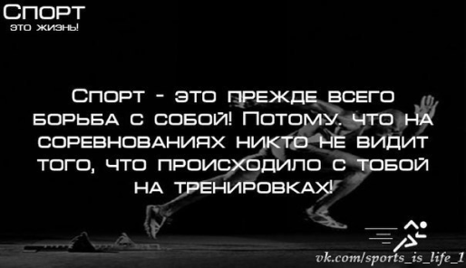

Новости спорта

Внимание!
Выкладываем результаты недавно прошедших матчей (справа)
КАМАЗ 0:0 Волга Ульяновск
ФК Кубань 1:2 Рубин
Балтика 2:0 СКА Хабаровск
17:30
Овечкин сократил отставание от Кросби в списке лучших бомбардиров в истории до 11 очков
15:55
«Не виню его за это». В «Вашингтоне» рассказали, почему не удалось сохранить Орлова
14:46
УЕФА вернёт деньги 19 тысячам болельщиков «Ливерпуля» за финал Лиги чемпионов
14:43
«Салават» сравнял счёт в серии с «Адмиралом». Судьбу четвёртого матча решил гол Панина
Поделится
новостью
Прокомментировать
Подписаться
на Новости